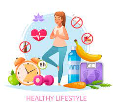
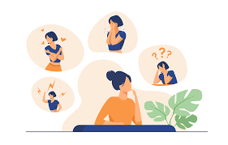
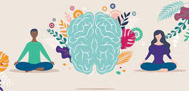
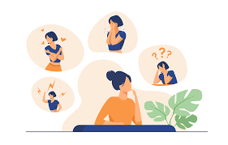
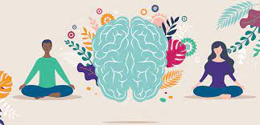

HEALTH IS WEALTH
A Healthy You Is A Better You
@Better you :)
HOME
Health Is Wealth is a modern day view to health.From a healthy brain to a healthy body,
a healthy
relationship with God and being in touch with our emotions.We find different ways to stay in touch
with ourselves and how we truly,honestly feel.
Our Vision for you include;

 



MIND
Our minds are our greatest asset.It is the source of all our
thoughts and ideas.It is therefore key that we take our time to nurture our
minds.So that from them arise beautiful well planted thoughts :)
BODY
Our bodies are the vessels carrying our organs and all that makes
us.They see us through the struggles and joys of life.They therefore need all the love
and care to carry us through the ferris wheel that is life:)
SOUL
Our souls,in my pov is the connection between us and a higher being.
Could be ALLAH or God.Whatever we believe in is mostly manifested in the
nature of our sous and our heart posture:)